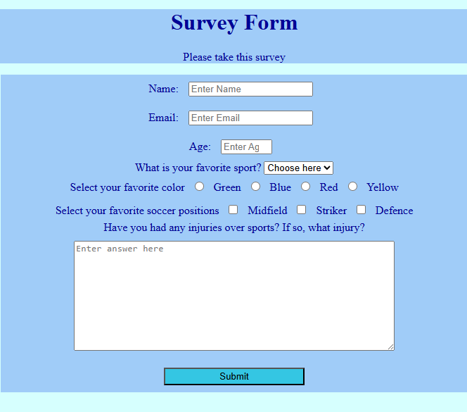
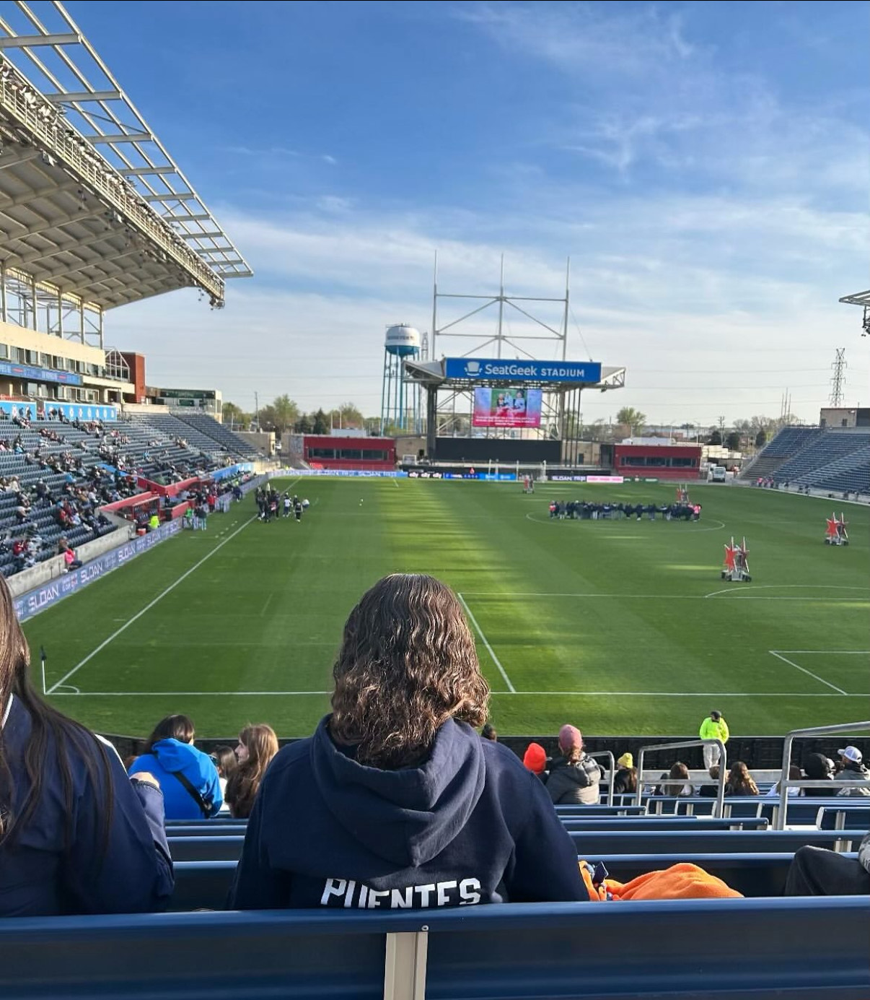
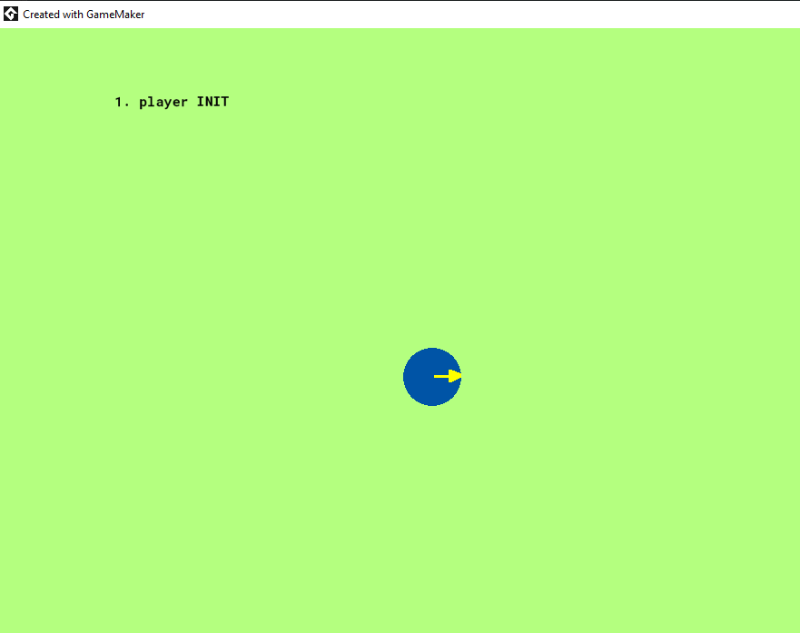

Hello, I'm Emelyn Puentes
from West Chicago Illinois
My Experience
Over the course of a couple years, I have collected experience in game programming and web development, just as;
- Web Development Course
- Video Game Programming Class
- TCD Game and Web Design
- Free Code Camp Certified

This image is the first web design project I programmed.
My Interests
As a kid I focused mainly on academics but the moment a ball touched my foot, I fell in love. Soccer has been my everything, getting me through life since I was 9 years old.

The most recent soccer games I attended.
My Most Recent Game
Puentes-WalkThisWay This is one of the most recent games I programmed at TCD. This game consists of a player who is able to move in a variety of ways. Using the arrow keys, the user can switch between the different modes and move the character in various ways using the WASD keys.